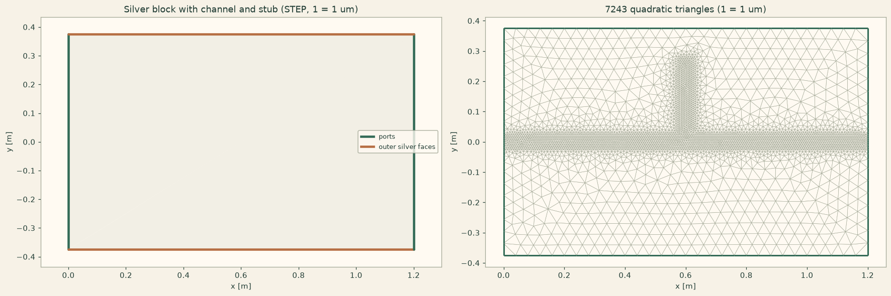

Docs › Examples › Plasmonic waveguide filter
Plasmonics, waveguides · 2D
Plasmonic waveguide filter
A 50 nm air channel between silver blocks guides a gap plasmon; a 250 nm side stub stops the band around 1.5 um.
Run locally with OneSimulation. The example downloads are free. Running them requires an activated runtime. The current pilot runs on macOS on Apple Silicon with CPython 3.13. Installation and activation · View pilot plans. Scope of the reference checks.

What it computes
OneSimulation solves the magnetic field of a two-dimensional section read from STEP files drawn in micrometres (the mesh is scaled to metres, the model solved in SI units) with silver as a Drude metal; the waveguide ports compute the gap plasmon on their line through silver, air and silver, so the S-parameters of the filter follow from one model per wavelength. The script that builds the STEP files comes with the notebook.
What it checks
The gap plasmon of the port line agrees with the exact metal-insulator-metal dispersion to 5.4e-5 in the effective index (complex) from 1.0 to 2.2 um; the filter transmits less than 10 % from 1.37 to 1.67 um with a minimum of 2e-4 at 1.51 um, against 1.38 um from the plain quarter-wave condition of the stub, which neglects the end and junction effects.
Geometry
The notebook starts at the import of the CAD files plasmonic_waveguide_stub_filter.step, plasmonic_waveguide_stub_filter_channel.step, plasmonic_waveguide_stub_filter_stub.step: STEP (AP242), readable by any CAD program, with the names of the faces that the boundary conditions use. Put them next to the notebook.

The geometry script
The script plasmonic_waveguide_stub_filter_geometry.py builds the geometry with the CAD objects of OneSimulation and writes the files. Change a dimension there, run it, and run the notebook again.
"""Geometry of the OneSimulation example "Plasmonic waveguide filter".
Builds, as thin plates with the CAD objects of OneSimulation and in micrometres, a metal-insulator-
metal waveguide: a 50 nm air channel 1.2 um long between two silver blocks 0.35 um thick
(plasmonic_waveguide_stub_filter.step; x_min and x_max are the ports, y_min and y_max the outer
faces of the silver), the channel (plasmonic_waveguide_stub_filter_channel.step) and a side stub of
the same width, 0.25 um deep into the upper silver (plasmonic_waveguide_stub_filter_stub.step).
"""
from onesim.cad.d3 import Box
length, gap, metal, stub, depth = 1.2, 0.05, 0.35, 0.25, 0.1
Box(
length=length, width=gap + 2 * metal, height=depth, origin=(0, -gap / 2 - metal, 0)
).save("plasmonic_waveguide_stub_filter.step")
Box(length=length, width=gap, height=depth, origin=(0, -gap / 2, 0)).save(
"plasmonic_waveguide_stub_filter_channel.step"
)
Box(
length=gap, width=stub, height=depth, origin=(length / 2 - gap / 2, gap / 2, 0)
).save("plasmonic_waveguide_stub_filter_stub.step")The notebook
The complete notebook, cell by cell. Run it to produce the figures and the comparison printout.
Two metal surfaces closer than the wavelength guide a gap plasmon: the surface plasmons of both walls couple into one TM mode whose magnetic field \(H_z\) is even across the gap. It exists down to gaps of a few nanometres and is the waveguide of plasmonic circuits. A side branch of the same width - a stub closed by the metal at its end - is a resonator: when its depth is about a quarter of the plasmon wavelength, the wave reflected in the stub cancels the transmitted one and the filter stops that band.
Silver is a Drude metal with \(\varepsilon_\infty=3.7\), \(\omega_p=1.3825\times10^{16}\) rad/s and \(\gamma=2.736\times10^{13}\) rad/s, the gap is air, 50 nm wide, the stub 250 nm deep. The section solves \(H_z\) (polarization Hz). The SectionWaveguidePort computes the gap plasmon on its port line from the material along it - silver, air, silver - and absorbs it.
| boundary | condition | |---|---| | x_min | waveguide port, gap plasmon fed with 1 W/m | | x_max | waveguide port | | y_min, y_max (0.35 um into the silver) | perfect electric conductor |
Reference (E. N. Economou, Phys. Rev. 182, 539 (1969); S. A. Maier, Plasmonics: Fundamentals and Applications, Springer 2007, §2.3; X.-S. Lin and X.-G. Huang, Opt. Lett. 33, 2874 (2008)). With \(\kappa_i=\sqrt{\beta^2-\varepsilon_ik_0^2}\) the gap plasmon of a gap \(w\) satisfies
A stub of depth \(L\) stops the guide near \(\mathrm{Re}\,\beta\,L\approx\pi/2\); the field that leaks around the corners and into the closing metal makes the stub look a little longer, so the quarter-wave estimate is approximate.
The STEP parts are drawn in micrometres, the unit that suits a channel of 50 nm; scaled brings the mesh to metres, so the model is solved in SI units and the plots show micrometres again.
import numpy as np
from onesim.cad.exchange import load
from onesim.materials import VACUUM_PERMEABILITY, VACUUM_PERMITTIVITY
from onesim.materials.electromagnetic import (
DrudeElectromagneticMaterial,
IsotropicElectromagneticMaterial,
RegionwiseElectromagneticMaterial,
)
from onesim.meshing import TriangularMesher, scaled
from onesim.numerics import Numerics
from onesim.numerics.fem import FiniteElement, Lagrange
from onesim.numerics.linear import ComplexSparseDirect
from onesim.physics.electromagnetics import (
FrequencyDomainMaxwell,
PerfectElectricConductor,
SectionWaveguidePort,
port_modes,
scattering_parameters,
)
from onesim.simulation import Problem, Simulation
from onesim.visualization import plots, theme
from scipy.optimize import newton
theme.set()
gap, depth = 50e-9, 250e-9
light = 1 / np.sqrt(VACUUM_PERMEABILITY * VACUUM_PERMITTIVITY)
silver = DrudeElectromagneticMaterial(
plasma_frequency=1.3825e16, collision_rate=2.736e13, high_frequency_permittivity=3.7
)Geometry and mesh
load reads the silver block with the channel and the stub; section cuts them at half thickness. Quadratic triangles of 6 nm in channel and stub and 40 nm in the silver, graded towards the air, where the field decays within 25 nm; scaled(..., "um") turns the micrometres of the drawing into metres.
parts = {
name: load(f"plasmonic_waveguide_stub_filter{name}.step").section(
(0, 0, 1), origin=(0, 0, 0.05)
)
for name in ("", "_channel", "_stub")
}
block = parts[""]
sides = block.boundaries
mesh = scaled(
TriangularMesher(
target_size=0.04,
embedded_regions=(
parts["_channel"].named("channel"),
parts["_stub"].named("stub"),
),
region_sizes={"channel": 0.006, "stub": 0.006},
).generate(block),
"um",
)
fig = plots.figure(1, 2, size=(16, 6))
plots.geometry(
block,
selection={
"ports": sides.x_min | sides.x_max,
"outer silver faces": sides.y_min | sides.y_max,
},
labels=False,
title="Silver block with channel and stub (STEP)",
length_unit="um",
drawing_unit="um",
ax=fig[0],
)
plots.mesh(
mesh,
groups=("all",),
legend=False,
title=f"{mesh.cell_count} quadratic triangles",
length_unit="um",
ax=fig[1],
)
plots.show()Model
Air in channel and stub, silver elsewhere; one model per vacuum wavelength from 1.0 to 2.2 um.
material = RegionwiseElectromagneticMaterial(
{
"channel": IsotropicElectromagneticMaterial(),
"stub": IsotropicElectromagneticMaterial(),
},
default=silver,
)
numerics = Numerics(
spatial=FiniteElement(element=Lagrange(order=2)),
linear_solver=ComplexSparseDirect(),
)
model = lambda wavelength: FrequencyDomainMaxwell(
domain=block.domain(),
frequency=light / wavelength,
material=material,
polarization="Hz",
phasor_convention="exp(-i*omega*t)",
amplitude_convention="peak",
)
solve = lambda physics: Simulation(
problem=Problem(
name="stub filter",
geometry=block,
physics=(physics,),
boundary_conditions=(
SectionWaveguidePort(
physics=physics, boundary=sides.x_min, modes=1, incident_power=1.0
),
SectionWaveguidePort(physics=physics, boundary=sides.x_max, modes=1),
PerfectElectricConductor(
physics=physics, boundary=sides.y_min | sides.y_max
),
),
),
mesh=mesh,
numerics=numerics,
).solve_stationary()
wavelengths = 1e-6 * np.concatenate(
(np.linspace(1.0, 1.3, 7), np.linspace(1.33, 1.75, 22), np.linspace(1.8, 2.2, 5))
)
models = [model(wavelength) for wavelength in wavelengths]
results = [solve(physics) for physics in models]
scattering = [
scattering_parameters(result, physics) for result, physics in zip(results, models)
]
transmitted = np.array([abs(s[(1, 0)]) ** 2 for s in scattering])
reflected = np.array([abs(s[(0, 0)]) ** 2 for s in scattering])
computed = np.array(
[
port_modes(result, physics)[0]["propagation_constant"][0]
for result, physics in zip(results, models)
]
)Results
The gap plasmon from the port line against the exact dispersion relation (solved by Newton's method from the single-interface plasmon), and the stop band against the quarter-wave condition.
wavenumbers = 2 * np.pi / wavelengths
metals = np.array(
[silver.relative_permittivity_at(physics.frequency) for physics in models]
)
relation = (
lambda beta, k0, metal: np.sqrt(beta**2 - k0**2 + 0j)
* np.tanh(np.sqrt(beta**2 - k0**2 + 0j) * gap / 2)
+ np.sqrt(beta**2 - metal * k0**2 + 0j) / metal
)
exact = np.array(
[
newton(relation, 1.3 * k0 * np.sqrt(metal / (metal + 1)), args=(k0, metal))
for k0, metal in zip(wavenumbers, metals)
]
)
print(
"lambda [um] eps_silver n_eff computed n_eff exact |S21|^2 |S11|^2"
)
for i in range(0, len(wavelengths), 3):
print(
f"{1e6 * wavelengths[i]:9.3f} {metals[i].real:8.2f}{metals[i].imag:+6.2f}i {computed[i].real / wavenumbers[i]:.5f}{computed[i].imag / wavenumbers[i]:+.5f}i "
f"{exact[i].real / wavenumbers[i]:.5f}{exact[i].imag / wavenumbers[i]:+.5f}i {transmitted[i]:.4f} {reflected[i]:.4f}"
)
print(
f"\nlargest deviation of the effective index: {np.max(np.abs(computed - exact) / wavenumbers):.1e}"
)
notch = wavelengths[np.argmin(transmitted)]
quarter = np.interp(np.pi / 2, (exact.real * depth)[::-1], wavelengths[::-1])
print(
f"stop band: least transmission {transmitted.min():.4f} at {1e6 * notch:.3f} um; quarter-wave estimate Re(beta) L = pi/2 at {1e6 * quarter:.3f} um"
)
print(
f"wavelengths with |S21|^2 < 0.1: {1e6 * wavelengths[transmitted < 0.1].min():.3f} to {1e6 * wavelengths[transmitted < 0.1].max():.3f} um"
)Figure
Transmission and reflection of the filter, the dispersion of the gap plasmon, and the magnetic field at the stop band and outside it.
x, y = np.asarray(mesh.coordinates).T
fields = {
f"{1e6 * wavelengths[i]:.2f} um": np.abs(
results[i]
.field(models[i].magnetic_flux_density)
.evaluate(np.column_stack((x, y)))[:, 2]
)
for i in (int(np.argmin(transmitted)), 0)
}
fig = plots.figure(2, 2, size=(18, 11))
plots.line(
1e6 * wavelengths,
{"|S21|^2 (transmitted)": transmitted, "|S11|^2 (reflected)": reflected},
vlines={"quarter-wave stub": 1e6 * quarter},
ylimits=(0, 1),
xlabel="vacuum wavelength [um]",
ylabel="fraction of the incident power",
title="Stub filter",
legend="center right",
ax=fig[0],
)
plots.line(
1e6 * wavelengths,
{"Re(n_eff) computed": computed.real / wavenumbers},
reference={"Re(n_eff) computed": exact.real / wavenumbers},
xlabel="vacuum wavelength [um]",
ylabel="effective index",
title="Gap plasmon of the 50 nm channel (dashed: exact)",
legend="upper right",
ax=fig[1],
)
for panel, (name, values) in zip((fig[2], fig[3]), fields.items()):
plots.heatmap(
x,
y,
values / values.max(),
triangles=np.asarray(mesh.cells),
limits=(0, 1),
label="|H_z| / max",
ylimits=(-0.15e-6, 0.35e-6),
title=f"|H_z| at {name}",
length_unit="um",
ax=panel,
)
plots.show()Going further
Change the stub depth in plasmonic_waveguide_stub_filter_geometry.py: the stop band moves in proportion to it. Two stubs a quarter plasmon wavelength apart deepen and widen the band, a stub filled with a dielectric shifts it to longer wavelengths.